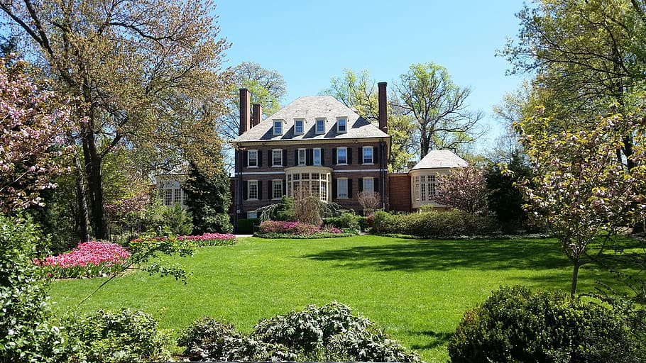

Notable Locations

Merlo Home
Home of Erdutza, Aaron, Beatriz, and Eric. There is one dog too named Tomato.

Black Bird Music
The building where Erdutza's music company resides. Their's is the biggest company there, but there's a few start ups in the building too.

Our Lady of Good Counsel
The Merlo children attend the schools attached to this church. Mass is attended regularly by the Merlo and Kraus.

Moon Family Home
Where Dante and Ji Yu live. There was an attempt at arson.